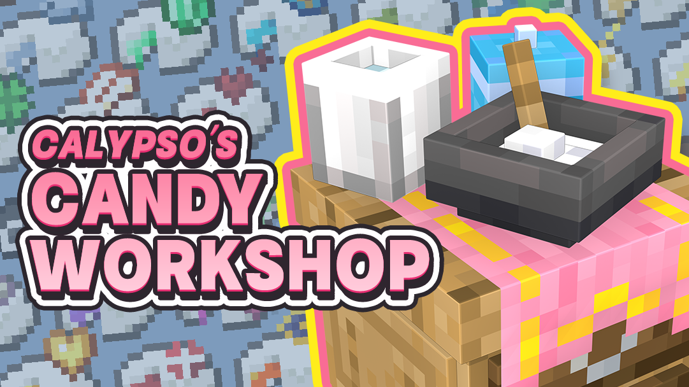
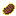
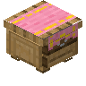
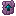
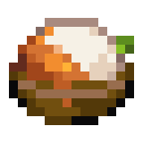
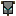
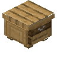
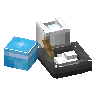

Calypso's Candy Workshop
共 49 个条目 · ccw
版本: 1.4.2 · 来源: ccw-v1.4.2-mc1.21.1.jar
Calypso's Candy Workshop is a lightweight utility mod that lets you craft various gummies with potion effects in a simple and immersive way.
Whether you're living a peaceful farm life or embarking into thrilling adventures, bring a pack of gummy along to add a little joy and hope to your journey.
官方介绍 （Modrinth · 中文版由 GLM AI 翻译，仅供参考）
CCW Content Introduction 卡里普索的糖果工坊快速入门
《卡里普索的糖果工坊》是一个轻量级的实用模组，通过简单且具有沉浸感的方式制作各种带有药水效果的软糖。
无论是养老的田园生活还是惊险刺激的冒险旅途，带上一包糖果上路，带上更多的快乐和希望上路。
*糖果工坊不会在世界上生成任何东西，这意味着您可以在您的游戏期间随时加入这个模组
Candy Workshop 糖果工坊
Gummy 糖果
相较于原版的药水，糖果们具有哪些优势？
可以堆叠： 堆叠上限为64，不必再担心占用背包或是箱子。
食用迅速/无残留： 以极快的速度吃下它们，并且不会留下垃圾。
直观的外观： 每个糖果都有独一无二，易于辨认的图标 。
食用时间可以堆叠： 是的，当你食用糖果后，相同效果的时间会被叠加而非刷新！
Crafting Gummies 制造糖果
1.牛奶：放入牛奶来调和。
2.糖：放入糖来进行合成，某些高级的软糖需要下界糖粉和龙息糖粉的参与。
3.主料：决定软糖会对食用者提供何种效果。
4.辅料：决定软糖的额外效果，浓郁、兴奋抑或是奶香？
*当原料备齐之后，您只需要耐心等待即可完成合成，一个合成周期获得8颗软糖。
*点击中间的碗图标来暂停合成
Adding Secondary Ingredients 为糖果添加辅料
在辅料中添加蜂蜜、可可豆和牛奶凝胶，将会为该批次的糖果添加额外效果：
浓郁： 该软糖的效果将持续更久
兴奋： 该软糖带来更强力的效果
奶香： 食用后清除其他效果
Advanced Gummies 高级糖果
出于平衡考虑，部分软糖的合成需要更高级的糖作为原材料。
下界糖粉： 使用下界疣和糖进行合成
龙息糖粉： 使用龙息和糖进行合成
Exclusive Recipes 独家配方
模组中加入了一些特殊的次级材料，
确保每一种糖果都有对应其效果的合成配方
Other Functional Content 其他功能性内容
Milk Extractor & Carton Milk 取奶器&牛奶盒
Milk Extractor 取奶器
还在担心背包被牛奶桶占满？取奶器和牛奶盒将解决这个问题
只需要使用取奶器右键牛牛，该工具将以极其温和的形式快速的获取封装好的牛奶
使用纸张可以为其恢复耐久度。
*提取的量恰到好处，温和不伤牛
Carton Milk 牛奶盒
大大少于一桶的容量但是又满足于合成需求，方便携带，方便存储。
喝下它只会移除一个状态效果。
由于采用可降解材料进行罐装，合成或是饮用不会产生副产物。
Gummy Gift Box (In Development) 糖果礼盒(开发中)
集携带与快速食用一体的小小糖果包裹，目前正在开发中
Developer List 开发人员名单
制作人&美术: Yuri'sCat-Calypso
主要开发: Loci_Natit
特别鸣谢:
动画顾问: akio
部分贴图支援: 【:】
↓如有BUG请在此处反馈↓ https://github.com/LNatit/CandyWorkshop/issues
Terms of Use 使用条款
代码部分： 除非另有声明，否则以MIT协议开源
资源部分： ARR保留所有权利
由 GLM AI 翻译，仅供参考
查看英文原文（Modrinth）
CCW Content Introduction 卡里普索的糖果工坊快速入门
Calypso's Candy Workshop is a lightweight utility mod that lets you craft various gummies with potion effects in a simple and immersive way.
Whether you're living a peaceful farm life or embarking into thrilling adventures, bring a pack of gummy along to add a little joy and hope to your journey.
Calypso's Candy Workshop doesn't generate any world content, so you can safely add it to your game at any time.
《卡里普索的糖果工坊》是一个轻量级的实用模组，通过简单且具有沉浸感的方式制作各种带有药水效果的软糖。
无论是养老的田园生活还是惊险刺激的冒险旅途，带上一包糖果上路，带上更多的快乐和希望上路。
*糖果工坊不会在世界上生成任何东西，这意味着您可以在您的游戏期间随时加入这个模组
Candy Workshop 糖果工坊
Gummy 糖果
What makes gummies better than vanilla potions?
Stackable: Stack up to 64 gummies — no more inventory or chest clutter.
Quick consumption/no residue: Eat them instantly, with no leftovers.
Intuitive visuals: Each gummy has a unique, easily recognizable icon.
Stacking duration: Identical effects stack in duration instead of resetting!
相较于原版的药水，糖果们具有哪些优势？
可以堆叠： 堆叠上限为64，不必再担心占用背包或是箱子。
食用迅速/无残留： 以极快的速度吃下它们，并且不会留下垃圾。
直观的外观： 每个糖果都有独一无二，易于辨认的图标 。
食用时间可以堆叠： 是的，当你食用糖果后，相同效果的时间会被叠加而非刷新！
Crafting Gummies 制造糖果
1.Milk: Used for blending the ingredients.
2.Sugar: Basic crafting material. Some advanced gummies require Nether Sugar or Dragon’s Breath Sugar ( Ender Sugar ).
3.Main Ingredient: Determines the primary effect of the gummy.
3.Secondary Ingredient: Adds bonus effects — Bold, Excited, or Milky?
*Once your ingredients are ready, just wait for the process to finish. One cycle produces 8 gummies.
*Click the bowl icon in the center to pause the crafting process.
1.牛奶：放入牛奶来调和。
2.糖：放入糖来进行合成，某些高级的软糖需要下界糖粉和龙息糖粉的参与。
3.主料：决定软糖会对食用者提供何种效果。
4.辅料：决定软糖的额外效果，浓郁、兴奋抑或是奶香？
*当原料备齐之后，您只需要耐心等待即可完成合成，一个合成周期获得8颗软糖。
*点击中间的碗图标来暂停合成
Adding Secondary Ingredients 为糖果添加辅料
Adding honey, cocoa beans, and milk gelatin as secondary ingredients will give extra effects to that batch of candies:
Bold: The gummy's effect will last longer
Excited: The gummy provides a stronger effect
Milky: Clears other effects after consumption
在辅料中添加蜂蜜、可可豆和牛奶凝胶，将会为该批次的糖果添加额外效果：
浓郁： 该软糖的效果将持续更久
兴奋： 该软糖带来更强力的效果
奶香： 食用后清除其他效果
Advanced Gummies 高级糖果
For balance purposes, some gummies require more advanced sugar as raw materials.
Nether Sugar Powder: Crafted with nether wart and sugar
Dragon's Breath Sugar Powder: Crafted with dragon's breath and sugar
出于平衡考虑，部分软糖的合成需要更高级的糖作为原材料。
下界糖粉： 使用下界疣和糖进行合成
龙息糖粉： 使用龙息和糖进行合成
Exclusive Recipes 独家配方
The mod includes special secondary materials to ensure each gummy has a unique recipe that matches its effect.
模组中加入了一些特殊的次级材料，
确保每一种糖果都有对应其效果的合成配方
Other Functional Content 其他功能性内容
Milk Extractor & Carton Milk 取奶器&牛奶盒
Milk Extractor 取奶器
Tired of milk buckets filling your inventory? Use the Milk Extractor and Carton Milk to solve this problem.
Right-click a cow with the extractor to gather packaged milk.
Restore the extractor’s durability with paper.
*Extraction is gentle and harmless to cows.
还在担心背包被牛奶桶占满？取奶器和牛奶盒将解决这个问题
只需要使用取奶器右键牛牛，该工具将以极其温和的形式快速的获取封装好的牛奶
使用纸张可以为其恢复耐久度。
*提取的量恰到好处，温和不伤牛
Carton Milk 牛奶盒
Holds less than a bucket, but it’s perfect for crafting, and convenient to carry and store.
Drinking it removes one status effect.
Eco-friendly packaging means no byproducts when crafting or drinking.
大大少于一桶的容量但是又满足于合成需求，方便携带，方便存储。
喝下它只会移除一个状态效果。
由于采用可降解材料进行罐装，合成或是饮用不会产生副产物。
Gummy Gift Box (In Development) 糖果礼盒(开发中)
A small gummy package that combines carrying and quick consumption features, currently under development.
集携带与快速食用一体的小小糖果包裹，目前正在开发中
Developer List 开发人员名单
Producer & Art|制作人&美术: Yuri'sCat-Calypso
Main Program Development|主要开发: Loci_Natit
Special thanks to my friends|特别鸣谢:
Animation Exchange|动画顾问: akio
Partial Texture Support|部分贴图支援: 【:】
↓If you find any bugs, please report them here↓ 如有BUG请在此处反馈↓ https://github.com/LNatit/CandyWorkshop/issues
Terms of Use 使用条款
Code Section: Unless otherwise stated, open-sourced under the MIT license
Assets Section: All Rights Reserved
物品与方块

神圣肉排ccw:blessed_steak · 物品高钙牛奶
ccw:calcium_rich_milk · 物品焦糖合金
ccw:carametal · 物品盒装牛奶
ccw:carton_milk · 物品亵渎贡品
ccw:defiled_offering · 物品海豚饼干
ccw:dolphin_cookie · 物品

抽屉台桌-粉红桌布ccw:drawer_table · 方块?终末糖果设备升级
ccw:ender_glaze_upgrade · 物品?终末糖果涂抹器
ccw:ender_glazer · 物品终末糖果弹匣
ccw:ender_magazine · 物品

终末锻造糖饼ccw:ender_smithing_wafer · 物品龙息糖粉
ccw:ender_sugar · 物品能量萝卜
ccw:energy_carrot · 物品腐蚀壳
ccw:erosion_shell · 物品清新蔬菜酱
ccw:fresh_veggie_sauce · 物品

蜜汁肉酱饭ccw:glazed_meat_rice · 物品镶金苹果
ccw:gold_studded_apple · 物品贪婪贡品
ccw:greedy_offering · 物品软糖
ccw:gummy · 物品?糖果涂抹器
ccw:gummy_glazer · 物品糖果弹匣
ccw:gummy_magazine · 物品大骨殴泥酱
ccw:hearth_warm_marrow_cream · 物品空壳苹果
ccw:iron_clad_apple · 物品智慧之瓶
ccw:knowledge_bottle · 物品雷鸣酸红酱
ccw:lacto_bolt_red_sauce · 物品萝卜羊肉酱
ccw:lamb_carrot_sauce · 物品恶性浆果
ccw:malignant_berry · 物品取奶器
ccw:milk_extractor · 物品牛奶凝胶
ccw:milk_gelatin · 物品预制纸板
ccw:milk_packaging · 物品?下界糖果设备升级
ccw:nether_glaze_upgrade · 物品?下界糖果涂抹器
ccw:nether_glazer · 物品下界糖果弹匣
ccw:nether_magazine · 物品下界锻造糖饼
ccw:nether_smithing_wafer · 物品下界糖粉
ccw:nether_sugar · 物品

不详旗帜ccw:ominous_flag · 物品幻翼珍珠
ccw:phantom_pearl · 物品

抽屉台桌ccw:plain_drawer_table · 方块鱼生配酱
ccw:sashimi_side_sauce · 物品沉寂酱
ccw:silenced_sauce · 物品

糖果工坊ccw:sugar_refinery · 方块糖醋肉酱
ccw:sweet_and_sour_meat_sauce · 物品?果蔬甜羹
ccw:sweet_harvest_soup · 物品糖水西瓜
ccw:sweet_melon_slice · 物品超脂油腻酱
ccw:ultra_rich_marrow_cream · 物品?按住§f[Shift]§7查看更多信息
ccw:unfold · 物品活力浆果
ccw:vitality_berry · 物品黑胡萝卜
ccw:void_carrot · 物品虚弱粉
ccw:weakness_powder · 物品